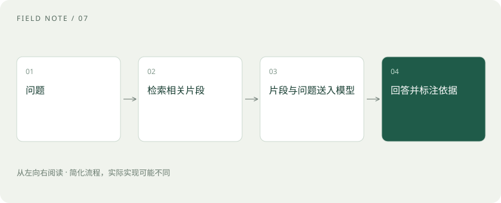

先读哪些知识
先用一个类比理解
像开卷考试：先找到相关书页，再根据书页回答。找到的页不对、书过期、看错内容，都可能导致答案出错。
类比只帮助建立直觉，不等同于技术的完整机制。
一图看懂

离线准备与在线回答
资料准备时，系统解析文件、切分片段并建立索引。用户提问后，系统检索候选资料，必要时重排序，再把选中内容放进上下文。检索和生成是不同环节，应分别观察。
Embedding、向量库、Reranker
Embedding 把内容映射成便于比较的数值表示；向量库管理这些表示并支持相似性搜索；Reranker 对问题与候选片段做更细的相关性排序。关键词检索也很有用，混合检索可以组合两类信号。
权限与证据要跟着资料走
索引更新、访问权限、片段出处和删除策略都影响可信度。相似不是事实相同，检索到旧制度就可能给出旧答案。模型应该能够说资料不足，引用也必须能回到原文验证。
放进真实场景
SCENARIO
问“今年出差住宿标准是多少”，检索命中去年的规定，即使模型忠实复述也不满足需求。这时应修复资料时效和检索，而不只是换模型。
别踩这个误区
RAG 通常不修改权重；它也不是把整个数据库一次性塞进模型。
想一想
回答错了，为什么先检查检索结果？
如果相关材料未找到或已过期，生成模型往往没有足够依据。
关联阅读
资料与边界
本文为原创知识讲解。类比和图示经过简化；示例数字不代表实测或报价。整理日期：2026-11-04。文末列出对应技术的原始资料，具体功能与版本支持请以原文为准。